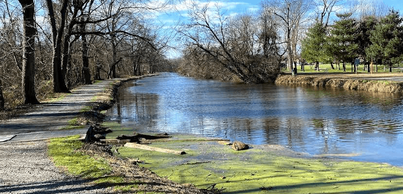

Pet-Friendly Parks in Philadelphia
Philadelphia has many parks and green spaces where you can walk and exercise your dog. Below you will find a list of popular spots, leash reminders, and safety tips. See our Featured Park Guide for a detailed look at one top location.
Popular Parks and Dog Areas
Schuylkill River Trail

A paved trail along the Schuylkill River. Gets busy on weekend mornings with cyclists, so keep your dog close to the right side.
Clark Park
A neighborhood park in West Philadelphia with open grass areas. Popular with dog owners. Dogs must remain on a leash at all times.
Pretzel Park
A small community park in Manayunk with a designated off-leash dog area. One of the few places in the city where dogs can run freely in a fenced space.
Leash Reminders and Safety Tips
- Dogs must be on a leash no longer than six feet in all Philadelphia city parks.
- Always carry waste bags and clean up after your pet. It is required by city ordinance.
- Keep your dog away from wildlife, ponds, and areas with standing water.
- Bring fresh water for your dog, especially on warm days.
- Check that your dog's vaccinations are up to date before visiting dog parks.
- Watch for signs about off-leash areas - they are not available in every park.
Park Etiquette Flip Cards
Click each card to reveal a park etiquette tip. These tips help keep Philadelphia parks safe and enjoyable for all visitors.
Featured Park Guide
Want a detailed walkthrough of one of Philadelphia's top pet-friendly parks? Visit our dedicated subpage for maps, rules, and first-visit tips.
Official Resource
For official dog regulations in Philadelphia parks, visit:
Philadelphia Parks & Recreation - Dog Regulations and Best Practices